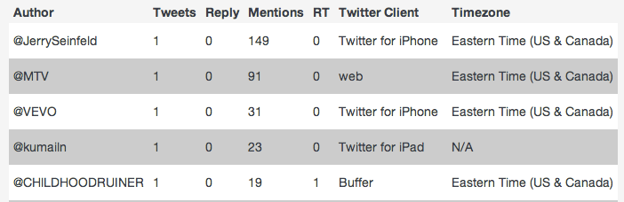
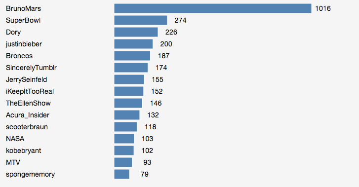
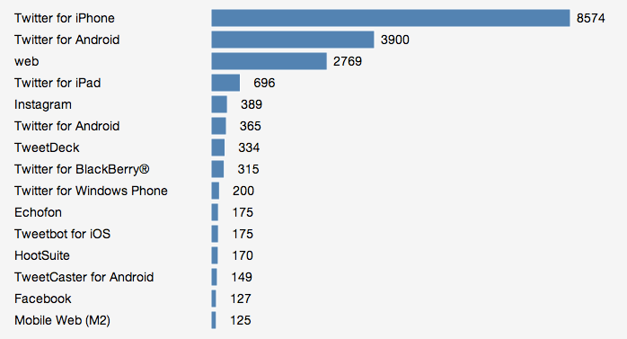
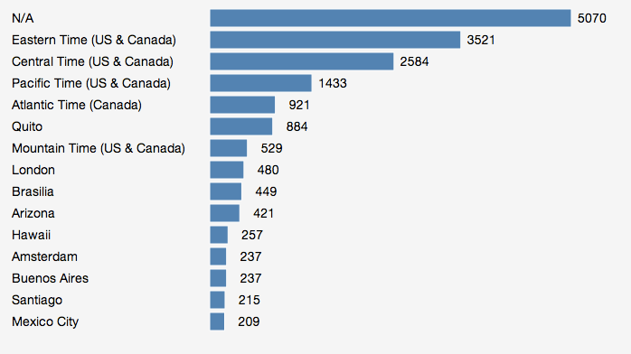
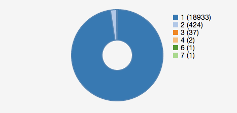

Super Bowl 48: Half Time Twitter Report
Background
Tweets were processed between 17:04:45 - 17:48:59 PST for term superbowl from geo coordinates -74.10,40.81,-74.08,40.84 (East Rutherford)
Summary
- 20,753 tweets from 19,398 people
- 9,112 RT (~ 44%)
- @JerrySeinfeld , @MTV & @VEVO lead the leader board (driven by mentions)
- Most of the users did not have a timezone set on their profile>
- Top 3 mentions during this time period were @BrunoMars, @SuperBowl & @Dory
- Tweets from iPhone lead the way follewed by Andriod & Web
- 424 people sent tweets twice during this period
Charts
Leader Board

Mentions

Source

User Timezone

Tweet Frequency

Tools
node.js, MongoDB, heroku & github . Questions? Contact @harishvc